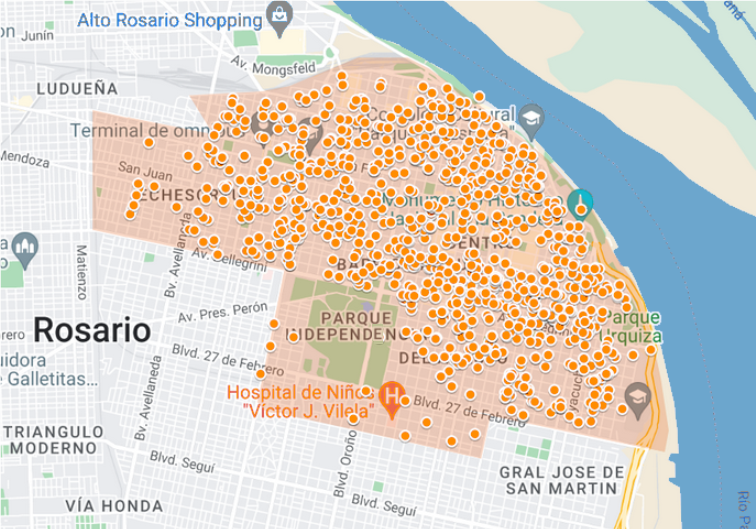
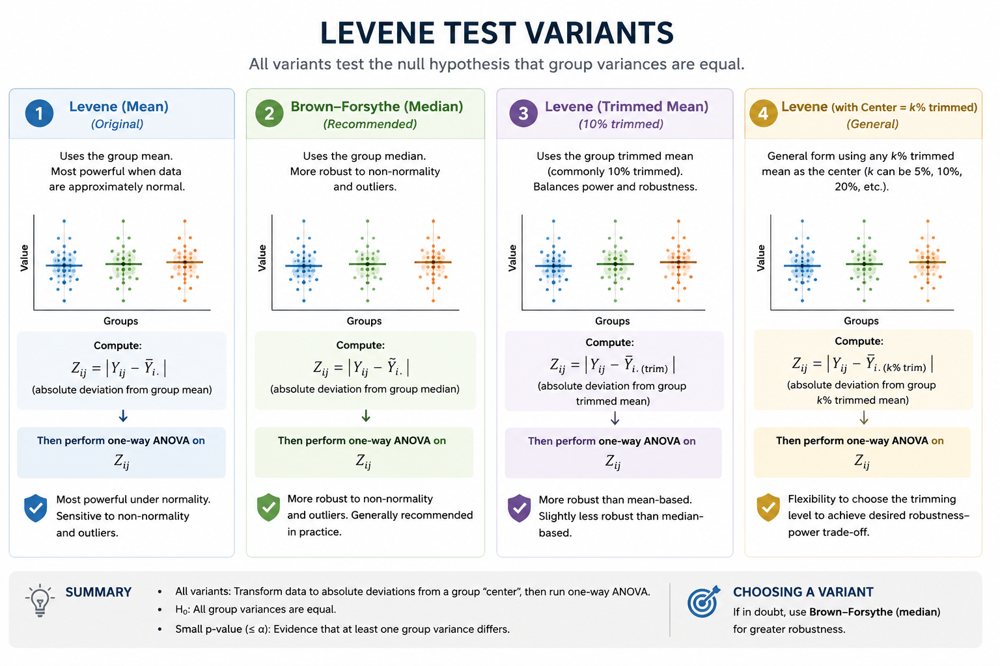
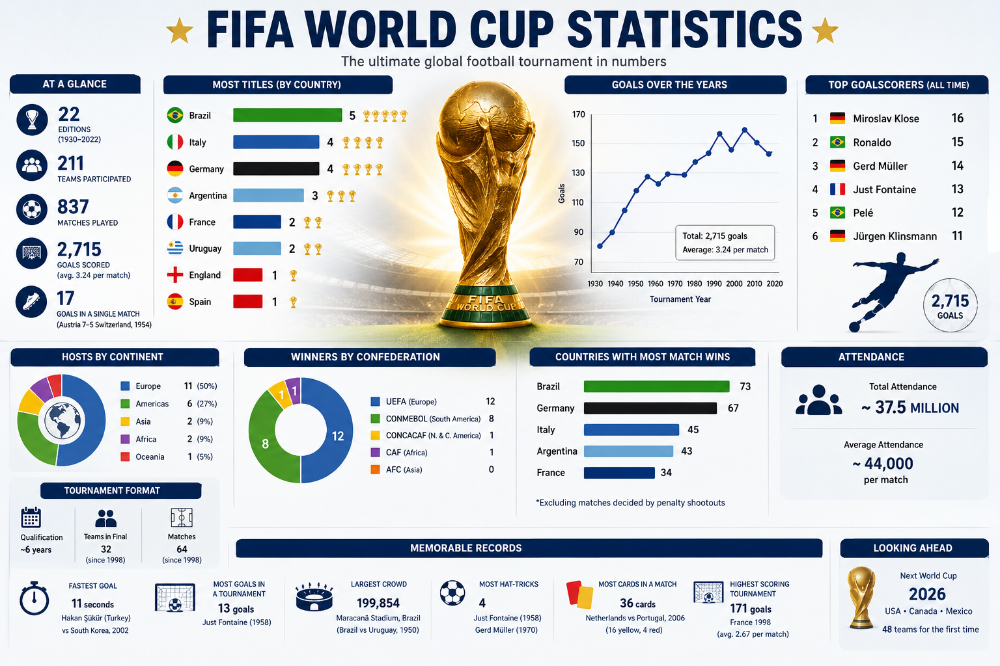

Rental prices in Rosario
A statistical analysis of rental prices in Rosario, Argentina. It features missing data imputation, text data analysis, geospatial data and integration with official government data.
R • StatisticsTransforming data into actionable insights, I am a passionate Data Scientist with a strong background in statistics and research. With expertise in data analysis, machine learning, and statistical modeling, I thrive on uncovering patterns and trends that drive informed decision-making. My commitment to continuous learning and my ability to communicate complex findings effectively make me a valuable asset in any data-driven environment.

A statistical analysis of rental prices in Rosario, Argentina. It features missing data imputation, text data analysis, geospatial data and integration with official government data.
R • Statistics
Monte Carlo simulations comparing robust alternatives to Levene's test under non-normal distributions.
Python • R • Statistics
Machine learning models predicting customer abandonment using exploratory analysis and classification.
Python • Pandas • Scikit-learn
Statistical analysis and predictive modeling of football team performance using international data.
Python • Web Scraping • StatisticsMy own take at the famous Titanic survival analysis problem from kaggle.
R • Statistics